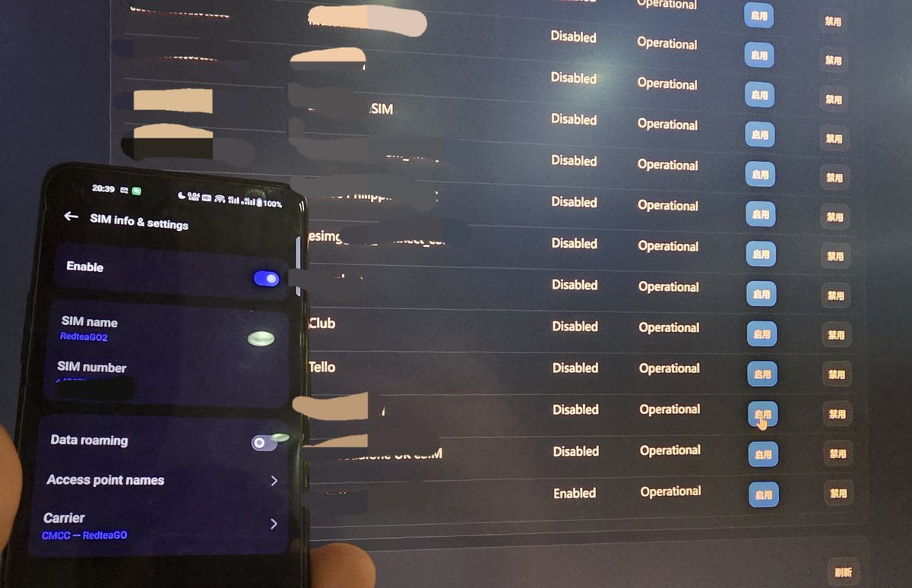
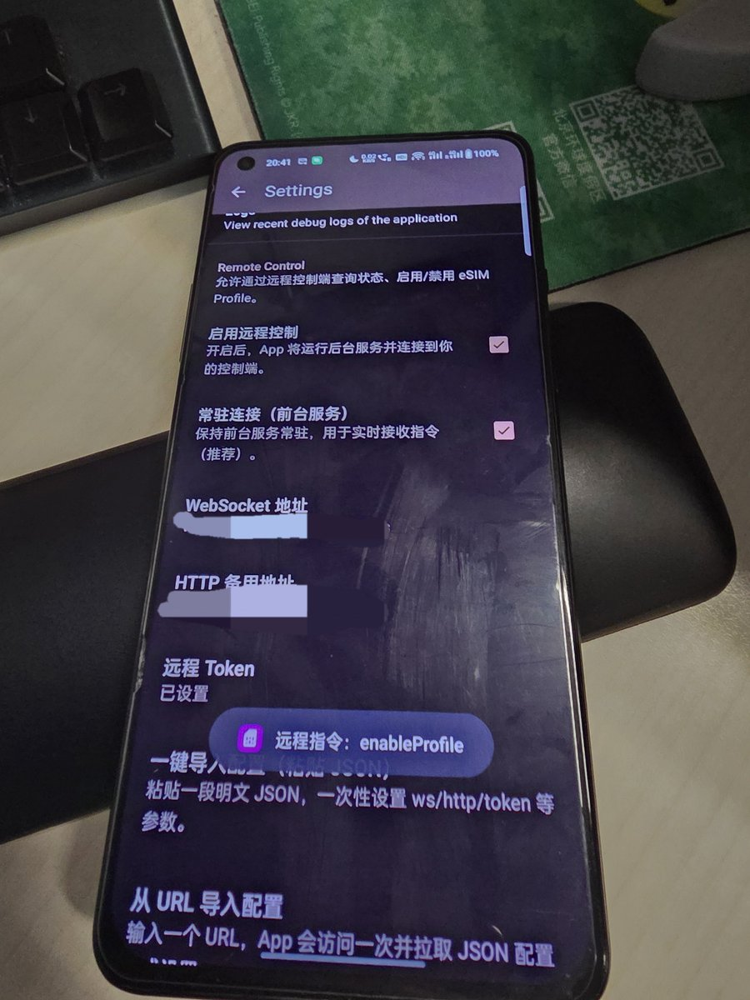

eUICC远程管理来啦🤓奶友dog在奶昔论坛上分享了Remote EUICC，这个模块可以实现把手机丢在家里，在外面通过网页控制台切换eSIM profile实现远程切卡。
目前支持estk max的双芯片，理论上支持其他实体eSIM（需要卡片能够添加自定义ARA-M hash）
暂时没有开源的计划，可在奶昔论坛上向他申请使用权限，预计还会增加SMS Forwarder之类的短信转发程序搭配使用。
由于安全因素，作者明确不会考虑加入远程写/删eSIM profile的功能，必须操作手机才能写和删eSIM profile。不过也可以考虑采用远程adb投屏的方案，当然方法有很多，也是提供一个远程管理eUICC的思路！
目前支持estk max的双芯片，理论上支持其他实体eSIM（需要卡片能够添加自定义ARA-M hash）
暂时没有开源的计划，可在奶昔论坛上向他申请使用权限，预计还会增加SMS Forwarder之类的短信转发程序搭配使用。
由于安全因素，作者明确不会考虑加入远程写/删eSIM profile的功能，必须操作手机才能写和删eSIM profile。不过也可以考虑采用远程adb投屏的方案，当然方法有很多，也是提供一个远程管理eUICC的思路！

